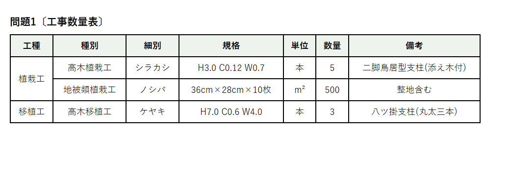
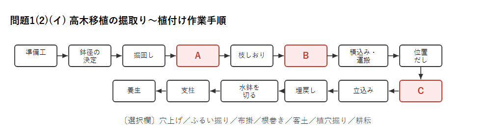
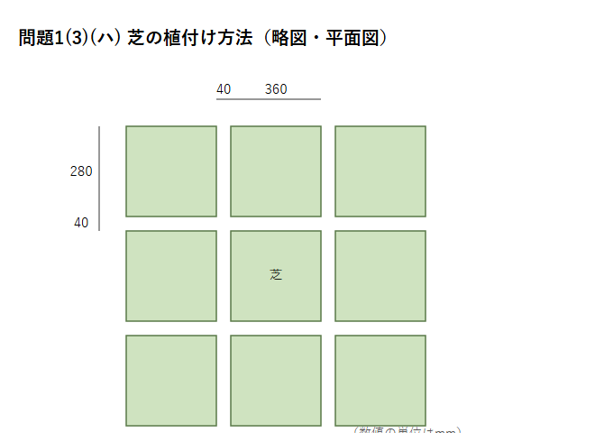
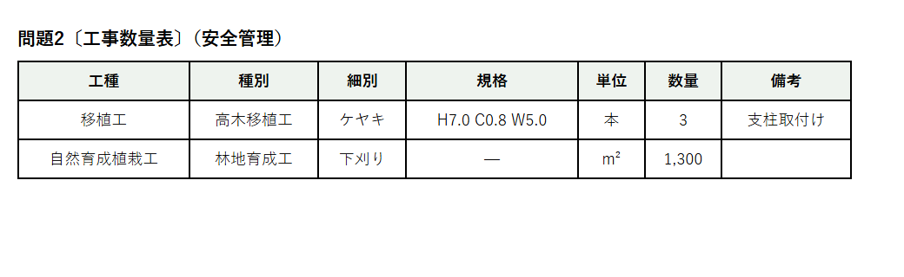

この記事は、令和7年度（2025年度）2級造園施工管理技士 第二次検定 の問題1・問題2について、独学一発合格者が 問題文（図・表を含む）＋想定解答＋詳しい解説 をまとめたものです。
第二次検定の公式正答は試験機関から非公開です。本記事の解答は、「公共用緑化樹木等品質寸法規格基準（案）」「造園施工管理技術編」「クレーン等安全規則」等を根拠に、独学一発合格者が作成した想定解答です。実際の採点では複数の表現が認められる場合があります。
すべて 独学一発合格。ブログ「土木のトリセツ」運営。
R7はすべて必須問題（2問）でした。土木と違い経験記述がないため、技術知識の記述に集中できます。
R7の問題用紙PDFは 2級造園 R7過去問ページ から無料ダウンロードできます（本記事の図表は当サイトで作成・再構成したものです）。
公共用緑化樹木等品質寸法規格基準（案）における用語に関する次の記述の（A）〜（C）に当てはまる適当な語句又は数値を、下記の選択欄から選び記述しなさい。
一般に高木の寸法規格は、樹高（H）、幹周（C）、枝張（W）の3つの寸法表示がなされる。このうち、幹周については、根鉢の上端より（A）m上りの位置を測定し、幹が2本以上の樹木の場合においては、おのおのの周長の総和の（B）％をもって幹周とする。枝張については、測定方向により幅に長短がある場合は、（C）とする。
>
〔選択欄〕0.8／1.0／1.2／60／70／80／最長の値／最短の値／最長と最短の値の平均値
すべて「公共用緑化樹木等品質寸法規格基準（案）」の定めどおり。
この3点は1級・2級とも頻出。1.2m・70%・平均値をセットで暗記しましょう。
※noteの有料ラインはこの位置に設定してください
次の〔工事数量表〕及び〔工事に係る条件〕に基づく造園工事の施工管理に関して答えなさい。
〔工事数量表〕

〔工事に係る条件〕
次の記述は、二脚鳥居型支柱の取付けについて記載したものである。下線部の(a)〜(e)について、その記述が適当な場合には〇印を、適当でない場合は適当な語句を、それぞれ解答欄に記述しなさい。
>
「支柱に用いる丸太は、所定の寸法を有し、定められた防腐処理が施されたもので、割れのない平滑な直幹材の皮はぎの新材とする。支柱の丸太と樹幹の取付け部は、樹幹に(a)杉皮を巻き、(b)鉄線を用いて、動揺しないように結束する。支柱の丸太と丸太の結合部分は、動揺しないように(c)鋸目を入れ、(d)緑化テープを巻き付け、結束する。丸太を打ち込む際は、末口を(e)下にして規定どおりに打ち込む。」
二脚鳥居型支柱の標準的な施工：
⚠️ この設問（特に(c)(e)）は造園の施工標準の細部に関わるため、お使いのテキストの図解で最終確認することをおすすめします。 (a)杉皮○・(b)鉄線→しゅろ縄・(d)緑化テープ→鉄線 は確度が高い一方、(c)(e)は表現・解釈に幅があります。
1) 施肥に関する次の記述の（A）、（B）に当てはまる適当な語句を記述しなさい。
「施肥作業には、樹木の植栽や移植などの植付け時に施す基肥（元肥）と、樹木の健全な生育維持や開花・結実後の樹勢回復のために必要な養分を補うための（A）に大別される。基肥（元肥）は、（A）と比較して長期間にわたり効果を発揮することから、（B）性肥料に分類される。」
>
2) シラカシの植付けにおいて、基肥（元肥）を施す際に、施工上留意すべき事項を、具体的に記述しなさい。（ただし、使用する基肥の選定に関する事項は除く。）
1) （A）追肥 ／ （B）遅効
2) 基肥が根（根鉢）に直接触れると根焼けを起こすため、植穴の底に施した基肥の上に客土を入れ、肥料と根が直接接しないようにしてから植え付ける。
(イ) 下図は、高木移植工の掘取りから植付けに関する一般的な作業手順を示したものである。下図の（A）〜（C）に当てはまる最も適当な語句を、下記の選択欄から選び記述しなさい。
〔選択欄〕穴上げ／ふるい掘り／布掛／根巻き／客土／植穴掘り／耕耘

(ロ) ケヤキの掘取りの準備として、上鉢の土のかき取りを行うことにした。その目的を、具体的に2つ記述しなさい。
>
(ハ) 溝掘り式根回しに関する次の記述の（A）、（B）に当てはまる適当な語句を記述しなさい。
「根元直径の3〜5倍の鉢を定めて周囲を掘り下げる。その際、周囲に張った側根のうち（A）となる太根を三方又は四方に残し、その他の根は切断する。続いて、環状剥皮を行う。これは、（A）となる太根の先端部への養分流通を（B）、剥皮部から発根しやすくすることを目的とする。」
>
(ニ) 掘取りを終えたケヤキの「積込み・運搬」に当たり、「枝しおり」を行った。枝をしおる順序を、具体的に記述しなさい。
>
(ホ) ケヤキの植付けにおいて「立込み」を行う際に、樹木を見映えよく植え込むための作業上の留意事項を、具体的に記述しなさい。
>
(ヘ) 埋戻し作業に関する次の記述の（A）に当てはまる数値、（B）に当てはまる語句を記述しなさい。
「樹木を植え穴に置いた後、鉢の周囲に土を埋め戻し、鉢が1/3〜（A）くらい埋まったら、十分に水を注いで泥状にし、鉢の周りに土がよく密着するように棒で突く。これを繰り返して、最後に土を地表面まで埋め戻して踏み固める。このような埋戻しの手法を（B）という。」
>
(ト) 埋戻し後に水鉢切りを行った。水鉢切りの作業内容を、具体的に記述しなさい。
(イ) （A）根巻き ／ （B）穴上げ ／ （C）植穴掘り
(ロ)（2つ） ①根鉢を軽くして積込み・運搬の取扱いを容易にする。②細根の分布を確認し、適切な鉢の大きさ（鉢径）を定める。
(ハ) （A）支持根 ／ （B）止め（妨げ）
(ニ) 樹冠の下枝（下方）から上枝（上方）へ、順にしおっていく。
(ホ) 樹木の表（見付け＝最も枝ぶりの良い面）を主要な視点方向に向け、幹を垂直に立てて植え込む。
(ヘ) （A）1/2 ／ （B）水極め（水ぎめ）
(ト) 樹木の根鉢の外周に沿って土を盛り上げ、灌水した水がたまるよう円形の縁（土手状の水鉢）を作る。
⚠️ (ハ)(B)の語句（「止め／妨げ／遮断」等）と(ニ)枝しおりの順序は、テキストの表現で最終確認をおすすめします。
(イ) ノシバの植付けに当たり、「葉」の品質について確認する内容を、具体的に2つ記述しなさい。（ただし、病害・虫害に関する内容は除く。）
>
(ロ) 床土の整地に当たり、排水性の確保のために行う作業の内容を、具体的に2つ記述しなさい。
>
(ハ) 以下の略図（平面図）は本工事で行う芝の植付け方法である。この植付け方法の名称を、記述しなさい。

(ニ) ノシバを植え付けた後に、目土かけを行うことにした。準備する「目土の材料に関する留意事項」を具体的に記述するとともに、目土かけを行う際に一般的に用いる道具の名称（ただし灌水に用いるものを除く）を、2つ記述しなさい。
(イ)（2つ） ①葉が密生し、生き生きとした緑色であること。②葉が一様にそろい、枯れ葉や変色がないこと。
(ロ)（2つ） ①適切な排水勾配をつける。②不陸を整正し、必要に応じて耕起して透水性を確保する。
(ハ) 目地張り（めじばり）
(ニ) 目土の材料：雑草の種子や病害虫を含まず、排水性・通気性の良い細かい砂質土を用いる。／道具：トンボ（レーキ）、ほうき。
次に示す〔工事数量表〕及び〔工事に係る条件〕に基づく造園工事の安全管理に関して答えなさい。
〔工事数量表〕

〔工事に係る条件〕
(1) 作業前のツールボックスミーティング（安全ミーティング）において、現場作業員が安全に作業を進めるために話題とする一般的な内容を、3つ記述しなさい。（ただし、本工事の具体的な作業内容に関するものを除く。）
>
(2)(イ) バックホウを用いて樹木の植え穴掘りの作業を行うこととした。やむを得ずバックホウの作業範囲近くで作業員を作業させなければならないとき、作業員の安全を確保するために行うべき措置を、具体的に2つ記述しなさい。（ただし、バックホウの性能や運転者が行う内容（点検・操作・運転等）及び保護帽に関するものは除く。）
>
(2)(ロ) 次の記述は、移動式クレーンの運転及び玉掛け作業の実施における安全管理上の措置を示したものである。下線部の(a)〜(d)について、その記述が適当な場合は〇印を、適当でない場合は適当な語句又は数値を、それぞれ解答欄に記述しなさい。
・移動式クレーンで荷を吊り上げた際、ブーム等のたわみによって吊り荷が移動するため、フックの位置はたわみを考慮して作業半径の少し(a)外側で作業した。
・荷を吊った状態でジブ（ブーム）を伸ばしていくと、荷の質量が変わらなくても、作業半径が大きくなり、定格荷重が(b)小さくなる。
・荷を吊り上げる際には、フックが必ず吊り荷の(c)中心の真上に来るように誘導した。
・使用する玉掛け用ワイヤーロープは、ワイヤーロープの切断荷重の値を、そのワイヤーロープに係る荷重の最大の値で除した安全係数が(d)5以上であることを確認した。
>
(2)(ハ) 移動式クレーンの据付けに当たり、実施すべき作業を記述しなさい。（ただし、作業範囲内の障害物及び地盤の状態に関する内容は除く。）
>
(2)(ニ) 移動式クレーンの使用に当たり、「クレーン等安全規則」上、その日の作業を開始する前に機能を点検する必要がある移動式クレーンの装置を、2つ記述しなさい。（ただし、ブレーキ及びクラッチの点検は除く。）
>
(3)(イ) 肩掛け式草刈り機を使用する場合、飛散物による傷害から身体を護るための保護具を、2つ記述しなさい。（ただし、保護帽、作業員の服装、安全靴は除く。）
>
(3)(ロ) 熱射病等の熱中症対策に関する次の記述の（A）、（B）に当てはまる適当な語句を記述しなさい。
「（A）指数（WBGT値）が基準値を超えるおそれのある現場においては…／作業の前後、作業中の定期的な水分・（B）の摂取を指導する。」
>
(3)(ハ) 下刈り中に刈刃が岩石等の障害物に当たった場合、刈刃を点検する前に行うべきことを記述しなさい。
(1)（3つ） ①その日の作業内容・分担と作業手順の確認。②危険箇所・ヒヤリハット情報の共有と注意喚起。③作業員の健康状態・体調の確認。
(2)(イ)（2つ） ①バックホウとの接触を防ぐため、誘導者を配置する。②作業範囲に立入禁止区域を設定し、関係者以外の立入りを禁止する。
(2)(ロ)
(2)(ハ) アウトリガーを最大限に張り出し、機体を水平に据え付ける。
(2)(ニ)（2つ） 巻過防止装置、コントローラー（または警報装置）。
(3)(イ)（2つ） 保護メガネ（ゴーグル）、すね当て（前掛け・脚絆）。
(3)(ロ) （A）暑さ ／ （B）塩分
(3)(ハ) 草刈り機のエンジンを停止する。
1. 経験記述がない＝技術知識の正確な記述が全て。
2. 支柱・移植（根回し・水極め）・芝張りが施工管理の頻出。
3. 安全管理は移動式クレーン・草刈り機・熱中症の数値・用語がそのまま問われる。
1. 過去問を年度ごとに解く（2級造園 過去問ページ）
2. 「公共用緑化樹木等品質寸法規格基準（案）」の数値（1.2m・70%・平均値）を暗記
3. 支柱・根回し・水極め・目地張りの作業手順と用語を図で覚える
4. クレーン等安全規則の数値（安全係数6・作業開始前点検）を暗記
ご質問やお気づきの点があればコメントでお知らせください。あなたの合格を応援しています！
ビーバー監督（土木のトリセツ）
2級造園・1級造園・1級土木施工管理技士をすべて独学一発合格。